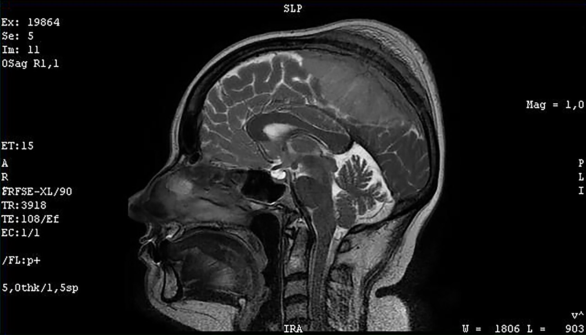

Ficha del catálogo
Meningioma
- Sistema
- Nervioso
- Modalidad
- RM
- Región
- Encéfalo y meninges
- Dificultad
- Intermedio
El meningioma es el tumor primario intracraneal más frecuente y se origina en las células meningoteliales de la aracnoides. Es de crecimiento lento, extraaxial y predomina en mujeres de edad media. Muchos son hallazgos incidentales, pero pueden producir crisis convulsivas o déficit focal por efecto de masa.
Técnica
Resonancia magnética de encéfalo con secuencias potenciadas en T1 y T2, FLAIR, difusión y series T1 con contraste paramagnético en los tres planos. La tomografía sin y con contraste complementa la valoración de calcificaciones y del hueso adyacente.
Qué observar
- Localización extraaxial con ángulos obtusos respecto a la duramadre
- Hendidura de líquido cefalorraquídeo y desplazamiento de vasos corticales entre la lesión y el parénquima
- Realce intenso y homogéneo tras el contraste
- Cola dural adyacente a la base de implantación
- Hiperostosis o remodelación del hueso vecino
- Edema vasogénico perilesional y grado de efecto de masa
Hallazgos
Masa de base dural, bien delimitada, isointensa o discretamente hipointensa respecto a la sustancia gris en T1 e iso a hiperintensa en T2, con realce intenso y homogéneo. Es habitual la cola dural, la hendidura de líquido cefalorraquídeo y el desplazamiento sin infiltración del parénquima. En tomografía suele ser espontáneamente hiperdensa y puede presentar calcificaciones e hiperostosis del hueso adyacente.
Perlas
Los signos que definen el origen extraaxial (ángulos obtusos, hendidura de líquido cefalorraquídeo, vasos corticales desplazados hacia dentro) son más fiables que el realce o la cola dural, porque esa cola también aparece en otras lesiones durales. Establecer primero si la lesión es extraaxial o intraaxial reordena por completo el diagnóstico diferencial.
Diagnóstico diferencial
- Metástasis dural
- Suele ser múltiple, de bordes más irregulares, con destrucción ósea lítica en lugar de hiperostosis y en contexto de neoplasia conocida.
- Schwannoma
- Se centra en un trayecto nervioso, con ensanchamiento del agujero de salida y tendencia a degeneración quística; no muestra hiperostosis.
- Hemangiopericitoma o tumor fibroso solitario
- Aspecto más lobulado, base dural estrecha, señal heterogénea con vasos internos y erosión ósea en lugar de hiperostosis.
- Paquimeningitis granulomatosa
- Engrosamiento dural difuso o multifocal en placa, no una masa focal, y suele acompañarse de datos clínicos inflamatorios.
Simuladores
- Granulaciones aracnoideas prominentes
- Placa de engrosamiento dural posquirúrgico o por hipotensión intracraneal
- Hematoma subdural crónico organizado con realce de membranas
Por modalidad
- TC
- Muestra la hiperdensidad espontánea, las calcificaciones y los cambios óseos hiperostóticos, y es útil para planificar el abordaje.
- RM
- Define la relación con el parénquima, la extensión dural, la invasión de senos venosos y la vía de acceso quirúrgica.
Protocolo
Cortes finos multiplanares de encéfalo con T1, T2, FLAIR y difusión, seguidos de T1 con contraste en axial, coronal y sagital; se añade venografía por resonancia si la lesión es parasagital o de la hoz para valorar permeabilidad del seno.
Clasificación
Se gradúan histológicamente en tres grados: El grado I es benigno y el más frecuente, el grado II es atípico con mayor recurrencia y el grado III es anaplásico o maligno. La imagen no establece el grado, pero los bordes mal definidos, el edema desproporcionado, la restricción marcada a la difusión y la invasión parenquimatosa sugieren grados más altos.
Errores frecuentes
- Interpretar la cola dural como signo específico de meningioma
- Clasificar como intraaxial una lesión con amplia base dural y edema prominente
- Omitir la valoración de la permeabilidad del seno venoso en lesiones parasagitales

meningioma tumor extraaxial cola dural hiperostosis duramadre resonancia craneal